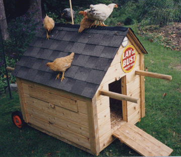
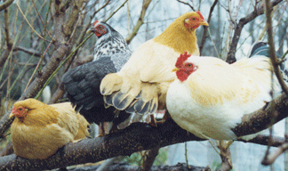

| New Chickens
It all began with a phone call from my dear friend Julia. “I just caught the Mother hen who hatched her chicks out in the meadow. I have six chicks for you,” Julia exclaimed. She had been pestering me for a while to get chickens saying, “They make your garden come alive and are great fun to watch. The eggs are delicious and have bright yellow-orange yolks. You will never want to buy store eggs again.” I was slow to respond to her prodding as I knew nothing about animals or chickens. “I will help you get started and you can call me any time with questions.,” she said. Having a chicken mentor sounded wonderful! |
 | ||||||
| In the morning I opened the door and they eagerly ran out, heading straight past the food dish to scratch in the mulch. I had placed their pen in the garden so there were kale plants growing and the soil was covered with a layer of mulch made of hay and old leaves from last fall. With their strong feet, the chicks scattered the mulch and scratched the ground furiously looking for bugs, worms and all sorts of delicious treats. Stopping occasionally, they would jump up to bite off a piece of kale. This was my first lesson, seeing what chicks wanted to eat when they had a choice. I had thought they just ate ground up or whole gains and seeds, but this was because in a confined area or inside a poultry barn, they never have access to any other foods. In a natural setting the seeds of plants and grasses they would eat are smaller, and not like the huge farmed varieties. It was also surprising how many different kinds of plants and fruits they ate. I could understand the yellow-orange yolks came from eating this wide variety of foods. The chicks grew quickly and began to mature. One day the morning silence was broken with a funny sound. Two chicks were roosters and they were learning to crow. I laughed every time I heard them practice. It took a couple of weeks of practice before they had a strong, loud crow. The roosters, who were larger, grew a large head comb and large waddles under their chin. The other four chicks, who I realized were hens, were smaller and had small head combs. It began slowly, but I could see as the chickens matured the dynamic of the flock changed. Mr. Rooster made a special call and pecked the ground when he found a tasty treat, and all the hens would run over to see what he had found. He was a cleaver rooster and at times he made his call, but had no special treats. The hens were smart and caught on to his trick, so he then had to work harder to find treats and woo his hens. |
|||||||
|  | |||||||